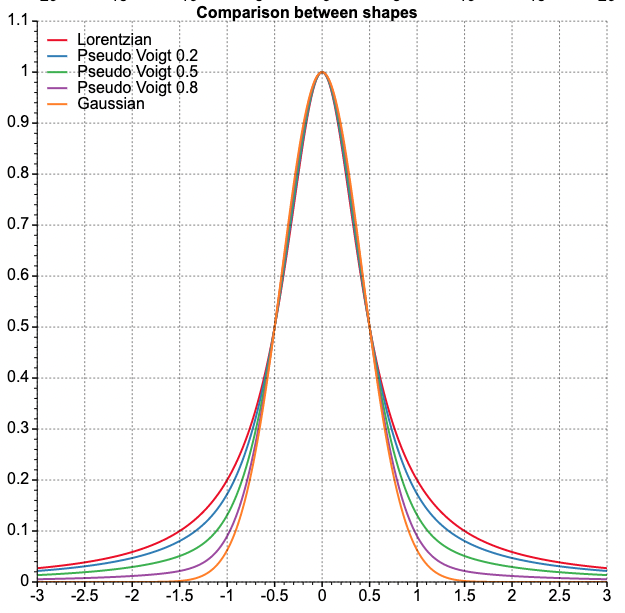

ml-peak-shape-generator
ml-peak-shape-generator


Generate various peak shapes.
The current supported kinds of shapes:
| Name | Equation |
|---|---|
| Gaussian | |
| Lorentzian | |
| Pseudo Voigt |
where
Installation
$ npm i ml-peak-shape-generator
This package allows to calculate various shapes. By default they will have a height of 1.

You see the resulting functions using this playground
Usage
import {
getGaussianData,
getLorentzianData,
getPseudoVoigtData,
} from 'ml-peak-shape-generator';
// It's possible to specify the windows size with factor option
let data = getGaussianData({ sd: 500 }, { factor: 3.5 });
// or fix the number of points as Full Width at Half Maximum
let data = getGaussianData({ fwhm: 500 }, { factor: 3.5 });
// It's possible to specify the windows size with factor option
let data = getLorentzianData({ fwhm: 500 }, { factor: 5 });
// It's possible to specify the windows size with factor option
let data = getPseudoVoigtData({ fwhm: 500 }, { factor: 5 });
It is also possible to take an instance of each kind of shape:
import { Gaussian, gaussianFct, Gaussian2D } from 'ml-peak-shape-shape';
const gaussianShape = new Gaussian({ fwhm: 500 });
// It is possible to set a new value for fwhm
gaussianShape.fwhm = 300;
// By default the height value ensure a volume equal 1.
const gaussian2DShape = new Gaussian2D({ fwhm: 500 });
// It is possible to set values for sd, fwhm and factor for each axes.
const gaussian2DShape = new Gaussian2D({ fwhm: { x: 300, y: 500 } });
// It is possible to set new value for fwhm by:
gaussian2D.fwhm = { x: 300, y: 500 };
// or set the same value for both axes.
gaussian2D.fwhm = 400;
//An instance of any shape has the same methods accessible for each
//shape e.g. fct or getData, but these use the internal parameters. e.g:
const gaussianShape = new Gaussian({ fwhm: 500 });
gaussianShape.fct(5);
gaussianFct(5, 500);
// getData
gaussianShape.getData({ factor: 3.5 });
import { getShape1D, getShape2D } from 'ml-peak-shape-generator';
// If you want to dynamically select a shape you can use the `getShapeGenerator` method. It returns a instance of required kind of shape.
let shapeGenerator = getShape1D({ kind: 'lorentzian', sd: 500 });
let shapeGenerator = getShape2D({ kind: 'gaussian', sd: 500 });
It is also possible to get a function that allows to calculate y for any x
import { gaussianFct } from 'ml-peak-shape-generator';
const func = gaussianFct(x - mean, fwhm);